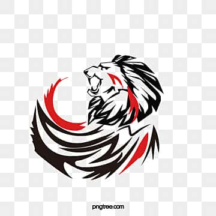

Welkom op mijn website. Hier vind je mijn projecten, vaardigheden en alles wat je moet weten over mij.
Ik ben een student Multimedia & Creative Technology bij de Erasmushogeschool in Anderlecht. Op deze website neem ik je mee in alles wat ik daar tot nu toe heb geleerd. Je vindt hier een overzicht van de vaardigheden die ik heb opgedaan en de projecten die ik op deze school heb gebouwd.
Wat deze opleiding zo interessant maakt, is de enorme diversiteit aan vakken: van designen en coderen tot filmen. Je leert hier unieke vaardigheden die je op weinig andere scholen vindt. Op deze website laat ik je zien hoe ik deze kennis toepas in de projecten die ik tot nu toe heb gemaakt.